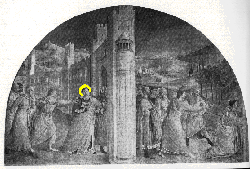
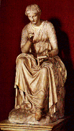
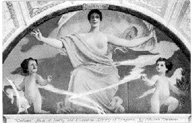
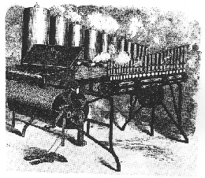

<html>
<head>
<title>The Annotated "St. Stephen"</title>
</head>
<body>
<a name="top"></a>
<a href="#calliop"><i>"Calliope woman, spinning that curious sense of your own..."</i></a>

<H2>The <i>Annotated</i> "St. Stephen"</H2>
Another installment in the <a href="gdhome.html"><i>Annotated</i> Grateful Dead Lyrics</a>.
<p>
By <a href="david.html">David Dodd</a><br>
1997-87 Research Associate, Music Dept., University of California, Santa Cruz
<hr>
A <a href="stefun.html">deconstruction</a> of "Saint Stephen" by Dave Blackburn. Check it out!
<hr>
<a href="copyrigh.html">Copyright notice</a>
<hr>
<a href="#saint"><h3>"St. Stephen"</H3></a>
Words by Robert Hunter; music by Jerry Garcia<br>
("Saint Stephen" composed and written by Jerry Garcia and Robert Hunter.
Reproduced by arrangement with Ice Nine Publishing Co., Inc. (ASCAP))<br>
<blockquote>
<a href="#stephen">Saint Stephen</a> with a <a href="rose.html">rose</a><br>
In and out of the garden he goes<br>
Country <a href="#garland">garland</a> in the wind and the rain<br>
Wherever he goes the people all <a href="#complain">complain</a><br>
<p>
Stephen prosper in his time <br>
Well he may and he may decline<br>
Did it matter? does it now? <br>
Stephen would answer if he only knew how  <br>
<p>
<a href="#well">Wishing well with a golden bell</a><br>
<a href="#bell">Bucket hanging clear to hell</a><br>
Hell halfway twixt now and then <br>
Stephen fill it up and lower down <br>
And lower down again <br>
<p>
<a href="ladyfinger">Lady finger</a> dipped in moonlight<br>
Writing `what for?' across the morning sky<br>
<a href="light.html">Sunlight</a> splatters dawn with answers <br>
Darkness shrugs and bids the day goodbye <br>
<p>
<a href="#arrow">Speeding arrow, sharp and narrow,</a><br>
What a lot of fleeting matters you have spurned <br>
Several seasons with their treasons<br>
<a href="#babe">Wrap the babe in scarlet covers</a> call it your own <br>
<p>
Did he doubt or did he try?<br>
Answers aplenty in the bye and bye<br>
Talk about your plenty, talk about your ills<br>
One man gathers what another man spills<br>
<p>
<a href="#remain">Saint Stephen will remain</a><br>
All he's lost he shall regain<br>
Seashore washed by the suds and the foam<br>
Been here so long he's got to calling it home<br>
<p>
Fortune comes a crawlin, <a href="#calliop">Calliope</a> woman <br>
Spinning that curious sense of your own<br>
Can you answer? Yes I can,<br>
but what would be the answer to the <a href="#answer">answer man</a>? <br>
<p>
<i>High green chilly winds and windy vines in loops around the<br>
twining shafts of lavender, they're crawling to the sun<br>
<p>
Underfoot the ground is patched with climbing arms of ivy <br>
wrapped around the <a href="http://elib.cs.berkeley.edu/cgi/img_query?enlarge=0000+0000+1101+0089" target="new">manzanita</a>, stark and shiny in the breeze<br>
<p>
Wonder who will water all the children of the garden when they<br>
sigh about the barren lack of rain and droop so hungry 'neath the<br>
sky...<br>
<p>
<a href="#wmtell">William Tell</a><a href="#tell"> has stretched his bow</a> till it won't stretch no<br>
furthermore and/or it may require a change that hasn't come<br>
before</i>
</blockquote>
<hr>
<a name="saint"><h3>Saint Stephen</h3></a>
Recorded on
<ul>
<li><a href="discog1.html#aoxomoxoa"><cite>AOXOMOXOA"</cite></a>
	<ul>
	<li>This version included on <cite><a href="discog2.html#trip">What a Long, Strange Trip It's Been</a></cite>
	</ul>
<li><cite><a href="discog2.html#livedead">Live Dead</a></cite>
<li><cite><a href="discog2.html#vault2">Two from the Vault</a></cite>
<li><cite><a href="discog1.html#dick2">Dick's Picks, Volume Two</a></cite>
</ul>
<p>
Covered by the Solar Circus on their album <cite>Juggling Suns.</cite> (1989)
<p>
Blair Jackson, in <a href="biblio.html#jackson"><cite>Grateful
Dead: the Music Never Stopped</b></cite></a>, says:
<blockquote>"AOXOMOXOA's most famous song, perhaps because it translated so beautifully to the group's live repertoire, is `St. Stephen,' a cryptic rocker (again with an unusual, irregular cadence, almost a combination of waltz and march rhythms in a rock motif) about a character who embodies the confusion of the period. Stephen has neither the Big Answers nor even the Big Questions. But he is a seeker, with a capital `S.' in his own way. And since, as the song says, `One man gathers what another man spills,' there is still as much of a chance that Stephen will shape his own destiny in a positive way,
as there is that he will fritter away his life. In the end, it all goes beyond the dreams and concerns of <i>one</i> person to a higher plan, for example, if Stephen has his own house in order, is that enough? `Can you answer? Yes, I can,' the song's final verse teases, and then poses a larger question: `But what would be your answer to the answer man?" (pp. 94-95)
</blockquote>
In an interview published in <cite>Relix</cite>, v. 5, # 2, the following exchange took place:
<blockquote>
"Relix: Was St. Stephen anyone specific?<br>
Hunter: No, it was just St. Stephen.<br>
Relix: You weren't writing about someone, you were writing about
something?<br>
Hunter: Yea. That was a great song to write..."" (p. 28)
</blockquote>
<hr>
<a name="stephen"><h3>Saint Stephen</h3></a>
<a href="stephen.gif"></a>
Illustration: <i>The Expulsion and Stoning of Saint Stephen</i>.
From the Chapel of Nicholas V in the Vatican. Fra Angelico, ca. 1447-1449. (The larger version
of the image is around 170,000 kb.)<br>
(Other good images of Saint Stephen abound: Adam Elsheimer's "The Stoning of Saint Stephen" (ca. 1600) is an incredibly powerful painting with angels hovering overhead while Stephen gets his head bashed in. And there's a beautiful wood carving by Tilman Riemenschneider (ca. 1500).
<p>
<a href="jurgen.html">Jurgen Fauth</a> sent this unidentified photo of a <a href="STEPHEN.JPG">painting of Saint Stephen</a> in the Vatican art gallery which he took this summer.
<p>
<p>
<p>
<p>
From the <a href="bibliol.html#catholic"><cite>New Catholic Encyclopedia</cite></a>:
"First deacon and apologist for the Christian faith. ... Stephen (from the Greek for 'crown') was a Hellenist, one of the Greek-speaking Jews of the Diaspora...." He was the first ordained by the Apostles as one of seven deacons. His complete story, such as it is, may be found in the <cite>Acts of the Apostles 6.1-8.2.</cite>  He was stoned to death for preaching that Israel had become more progressively opposed to God's word.
<p>
He died circa A.D. 34, and his feast day is December 26.
<p>
According to <a href="biblio.html#cappadona"><cite>The Dictionary of Christian Art</cite></a>,
"When held by a martyr, the red rose signified 'red martyrdom' or the loss of life." (p. 296) However, paintings of St. Stephen usually depict him holding either a palm, a censer, or a stone. (p. 311)
<p>
There are quite a number of other St. Stephens. Most notable is Stephen I, King of Hungary (997-Aug. 15, 1038). This Stephen is generally considered the real founder of the state of Hungary. Again, according to the <cite>
New Catholic Encyclopedia</cite>: Stephen was aware that his seminomadic people could survive only if they embraced
Christianity. He eliminated all the pagan representatives of the old order with grim determination and quite ruthless methods to achieve this integration into the Christian commonwealth." His feast day is September 2.
<p>
Other St. Stephens:
<ul>
<li>Stephen I, Pope (circa 250)
<li>Stephen of Die (1150-1208)
<li>Stephen Harding (d. 1134)
<li>Stephen of Muret (c. 1045-1124)
<li>Stephen of Narbonne (d. 1242)
</ul>
<p>
And this note from a reader:
<blockquote>
Subject: St. Stephen<br>
Date: Thu, 6 Sep 2001 23:07:25 EDT<br>
From: FIRESTONEPAMISUE@gateway.net
<p>
St. Stephan's Episcopal Church on Belvedere Island is where the memorial service for Jerry Garcia was held.  Thought it would be an important and interesting fact to add to your site.
<p>
Mark D. Firestone -<br>
Cotati, Ca.
</blockquote>

<hr>
<h3>Deadlit Topic 84 from the Well--selections</h3>
A very interesting discussion regarding the possible identity of St. Stephen
as Stephen Gaskin is to be found on the "Deadlit" conference, topic 84, on the
<a href="http://www.well.com" target="new">WELL</a>. Gaskin is the driving
force behind the <a href="http://www.thefarm.org/" target="new">Farm</a> commune, and was a significant member of the
Haight-Ashbury community at the height of hippie culture. Here are some
selections from that discussion: (Used with permission of the authors.)
<ul>
<li><blockquote>
"I always thought the GD song was about Steve Gaskin, who taught
a weekly (Monday night or Tuesday night?)
spiritual-type class in SF during the late 60's and later founded
The Farm, about which there are many stories, positive and
negative, here on the WELL and elsewhere. That is, "about" as much as any
GD song is "about" only one specific thing or even only one level
of "reality."" -- Alan Mande.
</blockquote>
<li><blockquote>
"As to St. Stephen. I used to think so but then I read where
Hunter had written that song while he was away from the Haight so wasn't in
touch with Steve Gaskin in that particular time. However, the tune is
loaded with <a href="ambig.html">ambiguity</a> and oblique references
that lend credence to the theory that SG is part of who they mean.
<a name="complain">
<b>"Wherever he goes the people all complain"</a></b> What that
always meant to me was that people were always asking SG about
their trips
and things  about their lives and whatnot and rather than
complaining
about him I pictured it as complaining <i>to</i> him. But I can
see the
whole story as a fuzzy historic piece about the Christian martyr.
So
as in all Dead songs...who knows?"--John Coate.
</blockquote>
<li><blockquote>"I have thought of St. Steven as enlightened
types
in general. The non-conformist ahead of her time. And as the GD
scene as a whole. The garden is a place of power for these
people. Enlightened folks have historically relied on rituals
performed in sacred places to help them deal with their
power.<br>
<b><a name="well">"Wishing well</a> with the golden bell</b>...it
seems to me that the
further one tries to reach toward ecstacy/nirvana, the more able
the person needs to be able to ground herself with energy based
in depths of darkness.<br>
<b><a name="arrow">"Speeding arrow</a></b>..the revelatory
experience. The sudden change.<br>
Some of my thoughts on this song are too heavy for me to feel
comfortable posting, so I'll move down a few stanzas...<br>
<b><a name="remain">"St. Steven</a> will remain</b>...Enlightened
folks have always been
present in every generation. Prophets, poets, etc. .. They are
traditionally social "losers" yet are traditionally revered long
after their deaths. I also think I am not alone in deriving
support and inspiration from the sea.<br>
<b><a name="children">"Children of the garden when they sigh
about the barren lack of rain and droop so hungry 'neath
the sky....</a></b> I see the hopefuls of today (today reamins a
constant
notion, even though the song was written forever ago) as being
these
children, and as corny as it sounds, I see the dead scene as
providing
the water we need to nourish and support one another...<br>
<b><a name="tell">"William Tell has stretched his bow...</a></b>
Is an image of
critical mass...an observation that significant change is the
only possible
outcome of the current state of affairs. As significant today as
it
was when it was written."--Julie Ellen Anzaldo.
</blockquote>
</ul>
<hr>
<a name="garland"><h3>garland</h3></a>
This note from a reader:
<blockquote>
Date: Mon, 06 Mar 2006 <br>
From: Damian G Stephen <damian.stephen@huskymail.uconn.edu><br>
Subject: St. Stephen hints<br>
<p>
David,<br>
I love your Dead annotation website.  I was born a little too late and kept in the dark too long to be a full-blown Dead fan right now.  Am working on that...  In the meantime, I love what you're doing with the lyrics. It's a great project.  I wish I knew more about the Dead, but I enjoy your pages regardless.  I learn something new with every browse.
<br>
In the meantime, I came across the song "St. Stephen" this weekend.  As you might be able to guess from my last name, I have an interest in things Stephen.
<br>
What jumped out at me was the word "garland."  The Greek word for "garland" is "stefanos"--if I had Greek fonts, I'd give you the actual spelling--essentially the name of that first martyr.
<br>
That brings me to point #2: "martyr" is Greek for "witness," an individual who is asked to answer truthfully.
<br>
Why Stephen wouldn't know how to answer, I'm not sure about that one.
<br>
Keep up the awesome work,<br>
Damian

</blockquote>
<hr>
<a name="calliop"><H3>Calliope woman...</H3></a>
<a href="http://www.christusrex.org/www1/vaticano/C-Calliope.jpg" target="new"></a>(Seated muse, Calliope, Roman, 2nd century A.D.)<br>
The image is linked to a larger view from the Vatican Pio-Clementine Museum, approx. 45 kb.
<p>
<p>
(Illustration from a mural in the
<a href="http://lcweb.loc.gov" target="new">Library of Congress</a>, painted by Edward Simmons, as reproduced on a circa 1910 postcard)<br><p>
Calliope is "the Muse of epic poetry, and chief of the Muses. She was the mother of Orpheus by Apollo or King Oeagrus." <a
href="biblio.html#benet">Benet's <cite>Reader's Encyclopedia</cite></a>. She was also the muse of playing on stringed
instruments.
<p>

Of course, a calliope is also a keyboard instrument, usually associated with the sound of circuses and carousels. So a
"calliope woman" could be "spinning" on a merry-go-round.
<p>
The calliope is an American invention, attributed to Joshua C. Stoddard of Worcester, Massachusetts, who filed a patent to produce the instruments in 1855. They were extensively mounted on showboats. According to <a href=biblio.html#grove">
<cite>New Grove Dictionary of Music and Musicians</cite></a>, "Most calliopes had a
limited range (13 to 20 whistles); many had 32, the largest 588.
Reputed
to have been audible as far as eight miles away, the calliope
played
popular dances or marches..." (p. 628)<p>
<a href="#top">[Top]</a>
<hr>
<a name="bell"><h3>"Bucket hanging clear to hell..."</h3></a>
A version of the ballad "The False Knight Upon the Road" <a
href="biblio.html#sharp">(Sharp, #2)</a> contains the line: "I
think I hear a bell. Yes, and it's ringing you to hell." (p. 3)
<p>
There is also a parallel to Bob Weir's song "Hell In a
Bucket."<p>

<hr>
<a name="ladyfinger"><h3>Ladyfinger</h3></a>
This has two associations (at least):<br>
1) Simply a woman's finger.<br>
2) A pastry called a lady finger. Here's a recipe:
<blockquote>
"LADYFINGERS<br>
<b>About 30 Small Cakes</b>
Preheat oven to 375 degrees.<br>
Have ingredients at about 75 degrees. Sift before measuring:<br>
<b>1/3 cup cake flour</b><br>
Resift it 3 times. Sift:<br>
<b>1/3 cup confectioners' sugar</b><br>
Beat until thick and lemon colored:<br>
<b>1 whole egg <br>
2 egg yolks</b><br>
Whip until stiff, but not dry:<br>
<b>2 egg whites</b><br>
Fold the sugar gradually into the gg whites. Beat the mixture
until it thickens again. Fold in the egg yolk mixture and:<br>
<b>1/4 teaspoon vanilla</b><br>
Fold in the flour. Shape the dough into oblongs with a paper
tube, on ungreased paper placed in a pan; or pour it into greased
ladyfinger or small muffin tins. Bake for about 12 minutes."
--<a href="biblio.html#rombauer"><cite>The Joy of
Cooking</cite></a>, p. 633.
</blockquote>

<hr>
<a name="babe"><h3>"Wrap the babe in scarlet colors..."</h3></a>
A version of the ballad "The Cruel Mother" <a
href="biblio.html#sharp">(Sharp</a> #10, version D) contains the
line: "O baby, O baby, if your were mine, ... I would dress you
in the scarlet so fine." (p. 57)<p>

<hr>
<a name="answer"><h3>The Answer Man</h3></a>
The name of a radio show, which went on the air in 1937. To quote
from
<a href="biblio.html#dunning"><cite>Tune In
Yesterday</cite></a>,
 "<i>The Answer Man</i> was a radio show on which the listeners
submitted the questions
and the "Answer Man" provided the answers--
that was all there was to this syndicated show. Still, it proved
a popular
15-minute entry, supporting star Albert Mitchell, producer Bruce
Chapman,
and their staff of up to forty workers for more than fifteen
years. ... The
show was marked by Mitchell's rapid-fire answers, creating the
illusion that he had the answer to
anything at his fingertips. This was almost true--the
headquarters of <i>The
Answer Man</i> were just across the street from the New York
Public Library."
(p. 37)<p>

<hr>
<H3><a name="wmtell">William Tell:</a></H3>
<blockquote>
"Swiss legendary hero who symbolized the struggle for political
and individual freedom. <br>
"The historical existence of Tell is disputed. According to
popular legend, he was a peasant from Burglen in the canton of
Uri in the 13th and early 14th centuries who defied Austrian
authority, was forced to shoot an apple from his son'e head, was
arrested for threatening the governor's life, saved the same
governor's life en route to prison, escaped, and ultimately
killed the governor in an ambush. These events, togher with
others, supposedly signalled the people to rise up against
Austrian rule." --<cite>The New Encyclopedia Britannica, 15th
ed.</cite>
</blockquote>

<hr>
Keywords: @rose, @saint, @garden, @light, @dark<br>
DeadBase code: [STEV]
<hr>
First posted: February, 1995 <br>
Last revised: March 8, 2006
<pre>


</pre>
</body>
</html>
